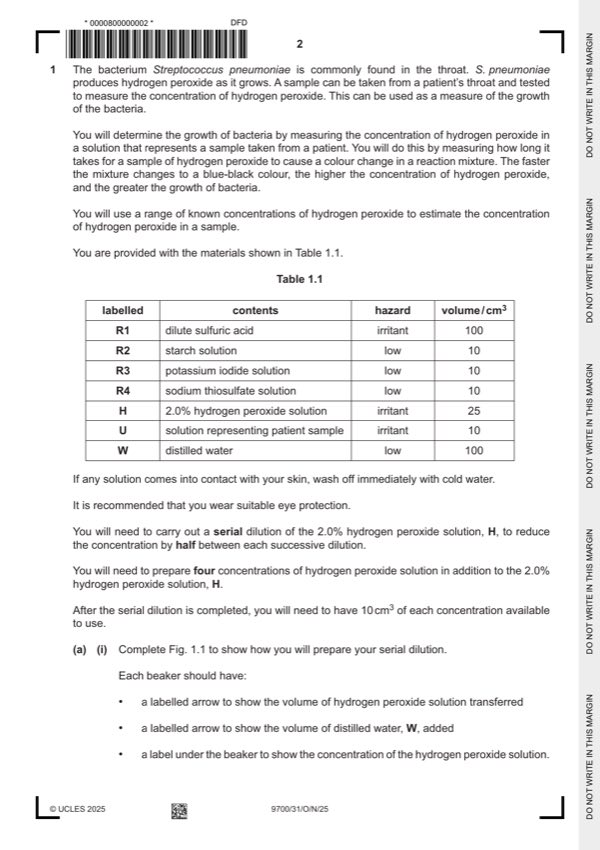

Question 1

Original paper page 2
Part 1(a)(i) — solution
1 states 1%, 0.5%, 0.25% and 0.125% under the appropriate beaker ; 3
Mark points
- Include the ideas shown in the solution above.
Part 1(a)(ii) — solution
1 (heading for independent variable) 5
concentration of H2O2 and % and to the left of the dependent variable ;
Mark points
- Include the ideas shown in the solution above.
Part 1(a)(iii) — solution
the times for U1, U2 and U3 recorded and seconds ; 1
Mark points
- Include the ideas shown in the solution above.
Part 1(a)(iv) — solution
shows the three times added and divided by 3 ; 1
Mark points
- Include the ideas shown in the solution above.
Part 1(a)(v) — solution
estimates the concentration of hydrogen peroxide in sample U according to results ; 1
Mark points
- Include the ideas shown in the solution above.
Part 1(a)(vi) — solution
shows that there are no anomalies ; 1
Mark points
- Include the ideas shown in the solution above.
Part 1(a)(vii) — solution
states that using smaller intervals between concentrations of hydrogen peroxide around the estimate would allow a more 1
accurate estimate ;
Mark points
- Include the ideas shown in the solution above.
Part 1(b)(i) — solution
1 x-axis: time / hours 4
and
y-axis: percentage of bacterial cells able to produce hydrogen peroxide ;
Mark points
- Include the ideas shown in the solution above.
Part 1(b)(ii) — solution
1 percentage increases as time progresses (for both temperatures) ; 2
Mark points
- Include the ideas shown in the solution above.
Part 1(b)(iii) — solution
1 value estimated from graph ; 2
Mark points
- Include the ideas shown in the solution above.
Part 1(b)(iv) — solution
states one of these variables – species of bacteria / pH / nutrient status / oxygen ; 1
Mark points
- Include the ideas shown in the solution above.